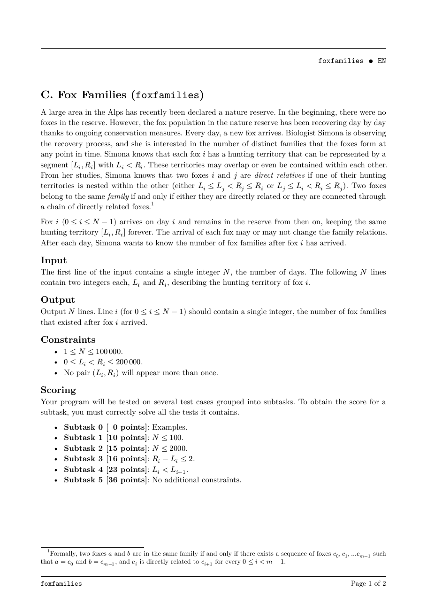
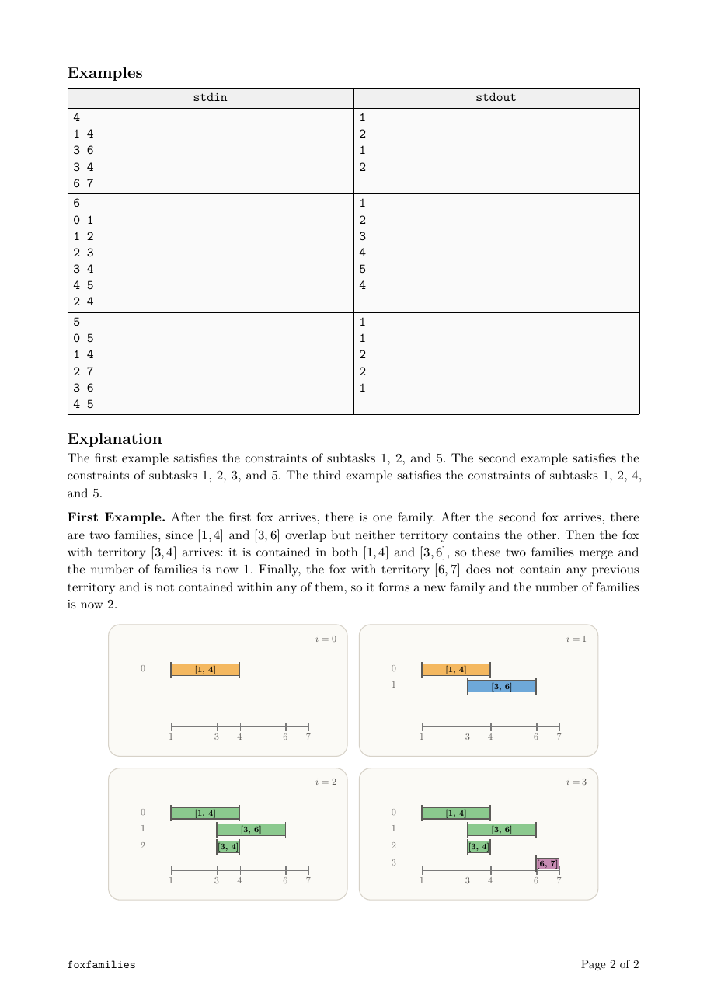

题面
来源：EGOI 2026 官方 PDF。模型收到的是由同一份 Typst 源文件转换的文字。


结果
Kimi K3.1 ProKimi
auto（max）
3/3
解出的采样 ↑
- 100采样 1 · 解出
- 100采样 2 · 解出
- 100采样 3 · 解出
- 35.8k平均输出 token（含思考） ↓
- 23.2输出速度 tokens/s ↑
- 1682 秒延迟 ↓
DeepSeek Flash V4.1-1017DeepSeek
auto（high）
3/3
解出的采样 ↑
- 100采样 1 · 解出
- 100采样 2 · 解出
- 100采样 3 · 解出
- 38.9k平均输出 token（含思考） ↓
- 193.7输出速度 tokens/s ↑
- 209 秒延迟 ↓
MiniMax M3.1 FlashMiniMax
auto（max）
3/3
解出的采样 ↑
- 100采样 1 · 解出
- 100采样 2 · 解出
- 100采样 3 · 解出
- 43.0k平均输出 token（含思考） ↓
- 153.5输出速度 tokens/s ↑
- 230 秒延迟 ↓
↑ 越大越好，↓ 越小越好。得分 0–100，按官方时限判定，所有测试点都满分才算解出。CPU 时间 / 官方解为解出的答案在官方解最慢的 3 个测试点上的 CPU 时间之比（几何平均），只比较官方解至少需要 0.05 秒的题；复杂度按增长幂次相对官方解分类。判题与计分见 原理。
代码
Kimi K3.1 Pro · 采样 1 · 224 行
#include <bits/stdc++.h> using namespace std; struct FoxFamilies { struct Item { int r, id; }; using LMap = map<int, Item>; using It = LMap::iterator; struct ExtremeSet { LMap byL; map<int, int> byR; // r -> l }; // 0: maximal intervals, 1: minimal intervals in their families. array<ExtremeSet, 2> ex; vector<int> parent, sz; vector<array<int, 2>> lo, hi; // Smallest/largest L of each extreme block. int find(int x) { while (parent[x] != x) { parent[x] = parent[parent[x]]; x = parent[x]; } return x; } void addNode() { int id = (int)parent.size(); parent.push_back(id); sz.push_back(1); lo.push_back({-1, -1}); hi.push_back({-1, -1}); } int unite(int a, int b) { a = find(a); b = find(b); if (a == b) return a; if (sz[a] < sz[b]) swap(a, b); parent[b] = a; sz[a] += sz[b]; for (int t = 0; t < 2; ++t) { if (lo[b][t] == -1) continue; if (lo[a][t] == -1) { lo[a][t] = lo[b][t]; hi[a][t] = hi[b][t]; } else { lo[a][t] = min(lo[a][t], lo[b][t]); hi[a][t] = max(hi[a][t], hi[b][t]); } } return a; } // containing=true: old interval contains [l,r]. // containing=false: old interval is contained in [l,r]. pair<It, It> getRange(int t, bool containing, int l, int r) { auto &s = ex[t]; if (containing) { auto ir = s.byR.lower_bound(r); if (ir == s.byR.end()) { return {s.byL.end(), s.byL.end()}; } auto begin = s.byL.find(ir->second); if (begin == s.byL.end() || begin->first > l) { return {s.byL.end(), s.byL.end()}; } auto finish = s.byL.upper_bound(l); return {begin, finish}; } else { auto begin = s.byL.lower_bound(l); if (begin == s.byL.end() || begin->second.r > r) { return {s.byL.end(), s.byL.end()}; } auto ir = s.byR.upper_bound(r); It finish = (ir == s.byR.end()) ? s.byL.end() : s.byL.find(ir->second); return {begin, finish}; } } vector<int> queryComponents(int t, bool containing, int l, int r) { vector<int> result; auto range = getRange(t, containing, l, r); auto &s = ex[t]; auto it = range.first; while (it != s.byL.end()) { if (it == range.second) break; // These checks also handle jumping past range.second. if (containing) { if (it->first > l) break; } else { if (it->second.r > r) break; } int root = find(it->second.id); result.push_back(root); // Extremes of one family form a contiguous block. it = s.byL.upper_bound(hi[root][t]); } return result; } It eraseAt(int t, It it) { auto &s = ex[t]; int l = it->first; int r = it->second.r; int root = find(it->second.id); bool hasPrev = (it != s.byL.begin()); auto prv = hasPrev ? prev(it) : s.byL.end(); auto nxt = next(it); int oldLo = lo[root][t]; int oldHi = hi[root][t]; s.byR.erase(r); s.byL.erase(it); if (oldLo == l || oldHi == l) { if (oldLo == oldHi) { lo[root][t] = hi[root][t] = -1; } else { if (oldLo == l) lo[root][t] = nxt->first; if (oldHi == l) hi[root][t] = prv->first; } } return nxt; } void removeRange(int t, bool containing, int l, int r) { auto range = getRange(t, containing, l, r); auto it = range.first; while (it != range.second) { it = eraseAt(t, it); } } void addExtreme(int t, int l, int r, int id) { ex[t].byL[l] = Item{r, id}; ex[t].byR[r] = l; int root = find(id); if (lo[root][t] == -1) { lo[root][t] = hi[root][t] = l; } else { lo[root][t] = min(lo[root][t], l); hi[root][t] = max(hi[root][t], l); } } }; int main() { ios::sync_with_stdio(false); cin.tie(nullptr); int N; cin >> N; FoxFamilies solver; long long families = 0; for (int i = 0; i < N; ++i) { int l, r; cin >> l >> r; solver.addNode(); // Families containing an old interval that contains the new one. auto containing = solver.queryComponents(0, true, l, r); // Families containing an old interval contained in the new one. auto contained = solver.queryComponents(1, false, l, r); vector<int> components = containing; components.insert(components.end(), contained.begin(), contained.end()); sort(components.begin(), components.end()); components.erase(unique(components.begin(), components.end()), components.end()); // If no old interval contains the new one, it becomes maximal. if (containing.empty()) { solver.removeRange(0, false, l, r); } // If it contains no old interval, it becomes minimal. if (contained.empty()) { solver.removeRange(1, true, l, r); } int root = i; for (int c : components) { root = solver.unite(root, c); } (void)root; if (containing.empty()) { solver.addExtreme(0, l, r, i); } if (contained.empty()) { solver.addExtreme(1, l, r, i); } families += 1LL - (long long)components.size(); cout << families << '\n'; } return 0; }
Kimi K3.1 Pro · 采样 2 · 179 行
#include <bits/stdc++.h> using namespace std; using Key = array<int, 3>; // {L, R, id}, or {R, L, id} in the R-ordered sets struct DSU { vector<int> p, sz; explicit DSU(int n) : p(n), sz(n, 1) { iota(p.begin(), p.end(), 0); } int find(int x) { while (p[x] != x) { p[x] = p[p[x]]; x = p[x]; } return x; } }; // A component occupies one contiguous block in each frontier. // Only the first and last elements of that block are needed. struct Range { bool empty = true; Key lo{}, hi{}; }; static void mergeRange(Range &a, const Range &b) { if (b.empty) return; if (a.empty) { a = b; return; } if (b.lo < a.lo) a.lo = b.lo; if (a.hi < b.hi) a.hi = b.hi; } int main() { ios::sync_with_stdio(false); cin.tie(nullptr); int N; cin >> N; DSU dsu(N); vector<Range> maximalRange(N), minimalRange(N); vector<int> seen(N, 0); // Maximal intervals: intervals not contained in any other arrived interval. // Minimal intervals: intervals containing no other arrived interval. // Both frontiers are antichains, so their L and R orders coincide. set<Key> maxByL, maxByR, minByL, minByR; const int INF = 1'000'000'000; int families = 0; for (int i = 0; i < N; ++i) { int L, R; cin >> L >> R; const int stamp = i + 1; vector<int> neighbours; auto addNeighbour = [&](int root) { if (seen[root] != stamp) { seen[root] = stamp; neighbours.push_back(root); } }; bool hasContainer = false; bool hasContained = false; // Components having a maximal interval containing [L,R]. auto it = maxByR.lower_bound(Key{R, -1, -1}); while (it != maxByR.end() && (*it)[1] <= L) { hasContainer = true; int id = (*it)[2]; int root = dsu.find(id); addNeighbour(root); // Skip the remainder of this component's contiguous block. int lastR = maximalRange[root].hi[1]; it = maxByR.upper_bound(Key{lastR, INF, INF}); } // Components having a minimal interval contained in [L,R]. it = minByL.lower_bound(Key{L, -1, -1}); while (it != minByL.end() && (*it)[1] <= R) { hasContained = true; int id = (*it)[2]; int root = dsu.find(id); addNeighbour(root); int lastL = minimalRange[root].hi[0]; it = minByL.upper_bound(Key{lastL, INF, INF}); } // If nothing contains the new interval, it becomes maximal. if (!hasContainer) { auto jt = maxByL.lower_bound(Key{L, -1, -1}); while (jt != maxByL.end() && (*jt)[1] <= R) { Key key = *jt; int l = key[0], r = key[1], id = key[2]; int root = dsu.find(id); Range &rg = maximalRange[root]; if (key == rg.lo && key == rg.hi) { rg.empty = true; } else if (key == rg.lo) { rg.lo = *next(jt); } else if (key == rg.hi) { rg.hi = *prev(jt); } maxByR.erase(Key{r, l, id}); jt = maxByL.erase(jt); } Key key{L, R, i}; maxByL.insert(key); maxByR.insert(Key{R, L, i}); maximalRange[i].empty = false; maximalRange[i].lo = maximalRange[i].hi = key; } // If the new interval contains nothing old, it becomes minimal. if (!hasContained) { auto jt = minByR.lower_bound(Key{R, -1, -1}); while (jt != minByR.end() && (*jt)[1] <= L) { Key rkey = *jt; int r = rkey[0], l = rkey[1], id = rkey[2]; Key key{l, r, id}; int root = dsu.find(id); Range &rg = minimalRange[root]; if (key == rg.lo && key == rg.hi) { rg.empty = true; } else if (key == rg.lo) { auto kt = minByL.find(key); rg.lo = *next(kt); } else if (key == rg.hi) { auto kt = minByL.find(key); rg.hi = *prev(kt); } minByL.erase(key); jt = minByR.erase(jt); } Key key{L, R, i}; minByL.insert(key); minByR.insert(Key{R, L, i}); minimalRange[i].empty = false; minimalRange[i].lo = minimalRange[i].hi = key; } ++families; // The new fox initially forms its own family. for (int oldRoot : neighbours) { int a = dsu.find(i); int b = dsu.find(oldRoot); if (a == b) continue; if (dsu.sz[a] < dsu.sz[b]) swap(a, b); dsu.p[b] = a; dsu.sz[a] += dsu.sz[b]; mergeRange(maximalRange[a], maximalRange[b]); mergeRange(minimalRange[a], minimalRange[b]); --families; } cout << families << '\n'; } return 0; }
Kimi K3.1 Pro · 采样 3 · 103 行
#include <bits/stdc++.h> using namespace std; struct MaxIndex { int n, sz; vector<pair<int, int>> tree; vector<set<pair<int, int>>> values; explicit MaxIndex(int n_) : n(n_), values(n_ + 1) { sz = 1; while (sz < n + 1) sz <<= 1; tree.assign(2 * sz, {-1, -1}); } void refresh(int x) { int p = sz + x; tree[p] = values[x].empty() ? make_pair(-1, -1) : *values[x].rbegin(); for (p >>= 1; p; p >>= 1) tree[p] = max(tree[p << 1], tree[p << 1 | 1]); } void add(int x, int y, int id) { values[x].insert({y, id}); refresh(x); } void erase(int x, int y, int id) { values[x].erase({y, id}); refresh(x); } // Among entries with coordinate <= x, return an id whose value is at least need. int query(int x, int need) const { if (x < 0) return -1; x = min(x, n); pair<int, int> best{-1, -1}; int l = sz, r = sz + x + 1; while (l < r) { if (l & 1) best = max(best, tree[l++]); if (r & 1) best = max(best, tree[--r]); l >>= 1; r >>= 1; } return best.first >= need ? best.second : -1; } }; struct Component { int mnL, mxL, mnR, mxR; }; int main() { ios::sync_with_stdio(false); cin.tie(nullptr); int N; cin >> N; const int C = 200000; MaxIndex outer(C), inner(C); vector<Component> comp(N); int families = 0; for (int i = 0; i < N; ++i) { int L, R; cin >> L >> R; comp[i] = {L, L, R, R}; int merges = 0; while (true) { // mnL <= L and mxR >= R. int other = outer.query(L, R); // mxL >= L and mnR <= R, using transformed coordinates. if (other == -1) other = inner.query(C - L, C - R); if (other == -1) break; outer.erase(comp[other].mnL, comp[other].mxR, other); inner.erase(C - comp[other].mxL, C - comp[other].mnR, other); comp[i].mnL = min(comp[i].mnL, comp[other].mnL); comp[i].mxL = max(comp[i].mxL, comp[other].mxL); comp[i].mnR = min(comp[i].mnR, comp[other].mnR); comp[i].mxR = max(comp[i].mxR, comp[other].mxR); ++merges; } families += 1 - merges; outer.add(comp[i].mnL, comp[i].mxR, i); inner.add(C - comp[i].mxL, C - comp[i].mnR, i); cout << families << '\n'; } return 0; }
DeepSeek Flash V4.1-1017 · 采样 1 · 142 行
#include <bits/stdc++.h> using namespace std; struct Solver { int N; vector<int> parent, sz, minR, maxR; vector<pair<int, int>> firstKey; set<pair<pair<int, int>, int>> compSet; set<pair<pair<int, int>, int>> intervals; int findRoot(int x) { if (parent[x] == x) return x; return parent[x] = findRoot(parent[x]); } int mergeComponents(int a, int b) { a = findRoot(a); b = findRoot(b); if (a == b) return a; compSet.erase({firstKey[a], a}); compSet.erase({firstKey[b], b}); if (sz[a] < sz[b]) swap(a, b); parent[b] = a; sz[a] += sz[b]; minR[a] = min(minR[a], minR[b]); maxR[a] = max(maxR[a], maxR[b]); firstKey[a] = min(firstKey[a], firstKey[b]); compSet.insert({firstKey[a], a}); return a; } void solve() { ios::sync_with_stdio(false); cin.tie(nullptr); cin >> N; parent.resize(N); sz.resize(N); minR.resize(N); maxR.resize(N); firstKey.resize(N); int ans = 0; for (int i = 0; i < N; i++) { int L, R; cin >> L >> R; pair<int, int> key = {L, -R}; auto itSucc = intervals.lower_bound({key, -1}); int pred = -1, succ = -1; if (itSucc != intervals.end()) { succ = itSucc->second; } if (itSucc != intervals.begin()) { auto itPred = prev(itSucc); pred = itPred->second; } bool inside = false; int component = -1; if (pred != -1 && succ != -1) { int rp = findRoot(pred); int rs = findRoot(succ); if (rp == rs) { inside = true; component = rp; } } parent[i] = i; sz[i] = 1; minR[i] = maxR[i] = R; firstKey[i] = key; intervals.insert({key, i}); compSet.insert({key, i}); ans++; int root = i; if (inside) { root = mergeComponents(root, component); ans--; } while (true) { auto itCur = compSet.find({firstKey[root], root}); if (itCur == compSet.begin()) break; auto itPrev = prev(itCur); int other = itPrev->second; int otherRoot = findRoot(other); if (maxR[otherRoot] >= R) { root = mergeComponents(root, otherRoot); ans--; } else { break; } } while (true) { auto itCur = compSet.find({firstKey[root], root}); auto itNext = next(itCur); if (itNext == compSet.end()) break; int other = itNext->second; int otherRoot = findRoot(other); if (minR[otherRoot] <= R) { root = mergeComponents(root, otherRoot); ans--; } else { break; } } cout << ans << '\n'; } } }; int main() { Solver solver; solver.solve(); return 0; }
DeepSeek Flash V4.1-1017 · 采样 2 · 160 行
#include <bits/stdc++.h> using namespace std; struct Comp { int lmin, lmax; int rmin, rmax; }; int main() { ios::sync_with_stdio(false); cin.tie(nullptr); int N; cin >> N; map<int, Comp> comps; // key = lmin set<pair<int, int>> maxSet; // (rmax, lmin) set<pair<int, int>> minSet; // (rmin, lmin) const int INF = 1000000000; long long answer = 0; for (int day = 0; day < N; ++day) { int L, R; cin >> L >> R; auto itUpper = comps.upper_bound(L); auto containing = comps.end(); if (itUpper != comps.begin()) { auto it = prev(itUpper); if (it->second.lmax >= L) { containing = it; } } map<int, Comp>::iterator a, b; bool haveRange = false; if (containing != comps.end()) { auto aIt = containing; auto maxIt = maxSet.lower_bound({R, -INF}); if (maxIt != maxSet.end()) { auto itM = comps.find(maxIt->second); if (itM->first < containing->first) { aIt = itM; } } auto bIt = containing; auto minIt = minSet.upper_bound({R, INF}); if (minIt != minSet.begin()) { --minIt; auto itN = comps.find(minIt->second); if (itN->first > containing->first) { bIt = itN; } } a = aIt; b = bIt; haveRange = true; } else { auto nextIt = comps.lower_bound(L); auto prevIt = (nextIt == comps.begin() ? comps.end() : prev(nextIt)); auto leftStart = comps.end(); auto leftEnd = comps.end(); if (prevIt != comps.end()) { auto maxIt = maxSet.lower_bound({R, -INF}); if (maxIt != maxSet.end()) { auto itM = comps.find(maxIt->second); if (itM->first <= prevIt->first) { leftStart = itM; leftEnd = prevIt; } } } auto rightStart = comps.end(); auto rightEnd = comps.end(); if (nextIt != comps.end()) { auto minIt = minSet.upper_bound({R, INF}); if (minIt != minSet.begin()) { --minIt; auto itN = comps.find(minIt->second); if (itN->first >= nextIt->first) { rightStart = nextIt; rightEnd = itN; } } } if (leftStart != comps.end() && rightStart != comps.end()) { a = leftStart; b = rightEnd; haveRange = true; } else if (leftStart != comps.end()) { a = leftStart; b = leftEnd; haveRange = true; } else if (rightStart != comps.end()) { a = rightStart; b = rightEnd; haveRange = true; } else { comps.emplace(L, Comp{L, L, R, R}); maxSet.insert({R, L}); minSet.insert({R, L}); ++answer; cout << answer << '\n'; continue; } } int newLmin = L; int newLmax = L; int newRmin = R; int newRmax = R; int merged = 0; auto it = a; while (true) { Comp cur = it->second; newLmin = min(newLmin, cur.lmin); newLmax = max(newLmax, cur.lmax); newRmin = min(newRmin, cur.rmin); newRmax = max(newRmax, cur.rmax); maxSet.erase({cur.rmax, cur.lmin}); minSet.erase({cur.rmin, cur.lmin}); bool isLast = (it == b); auto toErase = it; ++it; comps.erase(toErase); ++merged; if (isLast) break; } comps.emplace(newLmin, Comp{newLmin, newLmax, newRmin, newRmax}); maxSet.insert({newRmax, newLmin}); minSet.insert({newRmin, newLmin}); answer += 1 - merged; cout << answer << '\n'; } return 0; }
DeepSeek Flash V4.1-1017 · 采样 3 · 445 行
#include <bits/stdc++.h> using namespace std; const int INFV = 1000000000; const int NINF = -1000000000; struct Pair { int val, comp, id; }; struct Node { Pair mn[2]; Pair mx[2]; }; struct SegTree { int size; vector<Node> tr; Node emptyNode() { Node nd; for (int i = 0; i < 2; i++) { nd.mn[i] = {INFV, -1, -1}; nd.mx[i] = {NINF, -1, -1}; } return nd; } void init(int m) { size = 1; while (size < m) size <<= 1; tr.assign(2 * size, emptyNode()); } static inline void mergeMin(const Pair a[2], const Pair b[2], Pair out[2]) { Pair r0 = {INFV, -1, -1}; Pair r1 = {INFV, -1, -1}; Pair cand[4] = {a[0], a[1], b[0], b[1]}; for (int i = 0; i < 4; i++) { Pair c = cand[i]; if (c.comp == -1) continue; if (c.comp == r0.comp) { if (c.val < r0.val) r0 = c; continue; } if (c.comp == r1.comp) { if (c.val < r1.val) { r1 = c; if (r1.val < r0.val) swap(r0, r1); } continue; } if (c.val < r0.val) { r1 = r0; r0 = c; } else if (c.val < r1.val) { r1 = c; } else if (c.val == r1.val && c.comp < r1.comp) { r1 = c; } } out[0] = r0; out[1] = r1; } static inline void mergeMax(const Pair a[2], const Pair b[2], Pair out[2]) { Pair r0 = {NINF, -1, -1}; Pair r1 = {NINF, -1, -1}; Pair cand[4] = {a[0], a[1], b[0], b[1]}; for (int i = 0; i < 4; i++) { Pair c = cand[i]; if (c.comp == -1) continue; if (c.comp == r0.comp) { if (c.val > r0.val) r0 = c; continue; } if (c.comp == r1.comp) { if (c.val > r1.val) { r1 = c; if (r1.val > r0.val) swap(r0, r1); } continue; } if (c.val > r0.val) { r1 = r0; r0 = c; } else if (c.val > r1.val) { r1 = c; } else if (c.val == r1.val && c.comp < r1.comp) { r1 = c; } } out[0] = r0; out[1] = r1; } void pull(int p) { mergeMin(tr[p << 1].mn, tr[p << 1 | 1].mn, tr[p].mn); mergeMax(tr[p << 1].mx, tr[p << 1 | 1].mx, tr[p].mx); } void update(int pos, Pair mn[2], Pair mx[2]) { int p = pos + size; for (int i = 0; i < 2; i++) { tr[p].mn[i] = mn[i]; tr[p].mx[i] = mx[i]; } for (p >>= 1; p; p >>= 1) pull(p); } Node query(int l, int r) { Node res = emptyNode(); if (l > r) return res; l += size; r += size; Pair resMin[2] = {{INFV, -1, -1}, {INFV, -1, -1}}; Pair resMax[2] = {{NINF, -1, -1}, {NINF, -1, -1}}; while (l <= r) { if (l & 1) { Pair tmp[2]; mergeMin(resMin, tr[l].mn, tmp); resMin[0] = tmp[0]; resMin[1] = tmp[1]; mergeMax(resMax, tr[l].mx, tmp); resMax[0] = tmp[0]; resMax[1] = tmp[1]; l++; } if (!(r & 1)) { Pair tmp[2]; mergeMin(resMin, tr[r].mn, tmp); resMin[0] = tmp[0]; resMin[1] = tmp[1]; mergeMax(resMax, tr[r].mx, tmp); resMax[0] = tmp[0]; resMax[1] = tmp[1]; r--; } l >>= 1; r >>= 1; } for (int i = 0; i < 2; i++) { res.mn[i] = resMin[i]; res.mx[i] = resMax[i]; } return res; } }; struct LeafData { map<int, multiset<pair<int, int>>> comps; set<tuple<int, int, int>> minSet; // (minR, comp, id) set<tuple<int, int, int>> maxSet; // (-maxR, comp, id) }; int N; vector<int> Ls, Rs, posOf; vector<int> uniqueL; vector<int> parentArr, szArr; vector<vector<int>> members; vector<LeafData> leaves; SegTree segTree; vector<pair<int, int>> tempMoves; void eraseEntries(LeafData &ld, int comp, multiset<pair<int, int>> &s) { if (s.empty()) return; auto itMin = s.begin(); ld.minSet.erase({itMin->first, comp, itMin->second}); auto itMax = prev(s.end()); ld.maxSet.erase({-itMax->first, comp, itMax->second}); } void insertEntries(LeafData &ld, int comp, multiset<pair<int, int>> &s) { if (s.empty()) return; auto itMin = s.begin(); ld.minSet.insert({itMin->first, comp, itMin->second}); auto itMax = prev(s.end()); ld.maxSet.insert({-itMax->first, comp, itMax->second}); } void getTop(LeafData &ld, Pair mn[2], Pair mx[2]) { mn[0] = {INFV, -1, -1}; mn[1] = {INFV, -1, -1}; int cnt = 0; for (auto it = ld.minSet.begin(); it != ld.minSet.end() && cnt < 2; ++it, ++cnt) { int r, c, id; tie(r, c, id) = *it; mn[cnt] = {r, c, id}; } mx[0] = {NINF, -1, -1}; mx[1] = {NINF, -1, -1}; cnt = 0; for (auto it = ld.maxSet.begin(); it != ld.maxSet.end() && cnt < 2; ++it, ++cnt) { int neg, c, id; tie(neg, c, id) = *it; mx[cnt] = {-neg, c, id}; } } bool sameTop(Pair a[2], Pair b[2]) { return a[0].val == b[0].val && a[0].comp == b[0].comp && a[0].id == b[0].id && a[1].val == b[1].val && a[1].comp == b[1].comp && a[1].id == b[1].id; } void addInitial(int id) { int p = posOf[id]; LeafData &ld = leaves[p]; int comp = id; auto &s = ld.comps[comp]; s.insert({Rs[id], id}); insertEntries(ld, comp, s); Pair mn[2], mx[2]; getTop(ld, mn, mx); segTree.update(p, mn, mx); } void updateGroup(int p, int oldComp, int newComp, vector<pair<int, int>> &moves, int l, int r) { LeafData &ld = leaves[p]; Pair oldMn[2], oldMx[2]; getTop(ld, oldMn, oldMx); auto itOld = ld.comps.find(oldComp); if (itOld != ld.comps.end()) { auto &sOld = itOld->second; eraseEntries(ld, oldComp, sOld); for (int k = l; k < r; k++) { int id = moves[k].second; sOld.erase({Rs[id], id}); } insertEntries(ld, oldComp, sOld); if (sOld.empty()) ld.comps.erase(itOld); } auto &sNew = ld.comps[newComp]; eraseEntries(ld, newComp, sNew); for (int k = l; k < r; k++) { int id = moves[k].second; sNew.insert({Rs[id], id}); } insertEntries(ld, newComp, sNew); Pair newMn[2], newMx[2]; getTop(ld, newMn, newMx); if (!sameTop(oldMn, newMn) || !sameTop(oldMx, newMx)) { segTree.update(p, newMn, newMx); } } int findRoot(int x) { while (parentArr[x] != x) { parentArr[x] = parentArr[parentArr[x]]; x = parentArr[x]; } return x; } void unite(int a, int b) { a = findRoot(a); b = findRoot(b); if (a == b) return; if (szArr[a] < szArr[b]) swap(a, b); tempMoves.clear(); for (int id : members[b]) { tempMoves.push_back({posOf[id], id}); } sort(tempMoves.begin(), tempMoves.end()); int i = 0; int m = (int)tempMoves.size(); while (i < m) { int p = tempMoves[i].first; int j = i + 1; while (j < m && tempMoves[j].first == p) j++; updateGroup(p, b, a, tempMoves, i, j); i = j; } members[a].insert(members[a].end(), members[b].begin(), members[b].end()); members[b].clear(); parentArr[b] = a; szArr[a] += szArr[b]; } int queryContained(int root, int Lx, int Rx) { int start = lower_bound(uniqueL.begin(), uniqueL.end(), Lx) - uniqueL.begin(); if (start >= (int)uniqueL.size()) return -1; Node res = segTree.query(start, (int)uniqueL.size() - 1); for (int i = 0; i < 2; i++) { if (res.mn[i].comp != -1 && res.mn[i].comp != root && res.mn[i].val <= Rx) { return res.mn[i].id; } } return -1; } int queryContaining(int root, int Lx, int Rx) { int end = upper_bound(uniqueL.begin(), uniqueL.end(), Lx) - uniqueL.begin() - 1; if (end < 0) return -1; Node res = segTree.query(0, end); for (int i = 0; i < 2; i++) { if (res.mx[i].comp != -1 && res.mx[i].comp != root && res.mx[i].val >= Rx) { return res.mx[i].id; } } return -1; } int main() { ios::sync_with_stdio(false); cin.tie(nullptr); cin >> N; Ls.resize(N); Rs.resize(N); posOf.resize(N); uniqueL.reserve(N); for (int i = 0; i < N; i++) { cin >> Ls[i] >> Rs[i]; uniqueL.push_back(Ls[i]); } sort(uniqueL.begin(), uniqueL.end()); uniqueL.erase(unique(uniqueL.begin(), uniqueL.end()), uniqueL.end()); for (int i = 0; i < N; i++) { posOf[i] = lower_bound(uniqueL.begin(), uniqueL.end(), Ls[i]) - uniqueL.begin(); } int M = (int)uniqueL.size(); leaves.assign(M, LeafData()); segTree.init(M); parentArr.resize(N); szArr.assign(N, 0); members.assign(N, vector<int>()); tempMoves.reserve(N); int compCount = 0; for (int i = 0; i < N; i++) { parentArr[i] = i; szArr[i] = 1; members[i].clear(); members[i].push_back(i); addInitial(i); compCount++; while (true) { int root = findRoot(i); int y = queryContained(root, Ls[i], Rs[i]); if (y == -1) { y = queryContaining(root, Ls[i], Rs[i]); } if (y == -1) break; int rootY = findRoot(y); if (rootY == root) { break; } unite(root, rootY); compCount--; } cout << compCount << '\n'; } return 0; }
MiniMax M3.1 Flash · 采样 1 · 167 行
#include <bits/stdc++.h> using namespace std; struct DSU { vector<int> parent, sz; vector<int> minPos, maxPos; vector<int> minVal, maxVal; explicit DSU(int n) : parent(n), sz(n, 1), minPos(n), maxPos(n), minVal(n), maxVal(n) { iota(parent.begin(), parent.end(), 0); } int find(int x) { if (parent[x] == x) return x; return parent[x] = find(parent[x]); } int unite(int a, int b) { a = find(a); b = find(b); if (a == b) return a; if (sz[a] < sz[b]) swap(a, b); parent[b] = a; sz[a] += sz[b]; minPos[a] = min(minPos[a], minPos[b]); maxPos[a] = max(maxPos[a], maxPos[b]); minVal[a] = min(minVal[a], minVal[b]); maxVal[a] = max(maxVal[a], maxVal[b]); return a; } }; int main() { ios::sync_with_stdio(false); cin.tie(nullptr); int N; cin >> N; vector<int> L(N), R(N); for (int i = 0; i < N; ++i) { cin >> L[i] >> R[i]; } // Global position order: // increasing L, and decreasing R when L is equal. vector<int> order(N); iota(order.begin(), order.end(), 0); sort(order.begin(), order.end(), [&](int a, int b) { if (L[a] != L[b]) return L[a] < L[b]; if (R[a] != R[b]) return R[a] > R[b]; return a < b; }); vector<int> pos(N); for (int p = 0; p < N; ++p) { pos[order[p]] = p; } // Assign distinct values so that two positions form an inversion // exactly when their intervals are nested. vector<int> byR = order; sort(byR.begin(), byR.end(), [&](int a, int b) { if (R[a] != R[b]) return R[a] < R[b]; return pos[a] > pos[b]; }); vector<int> value(N); for (int i = 0; i < N; ++i) { value[byR[i]] = i + 1; } DSU dsu(N); for (int i = 0; i < N; ++i) { dsu.minPos[i] = dsu.maxPos[i] = pos[i]; dsu.minVal[i] = dsu.maxVal[i] = value[i]; } // One entry per current family: // key = first global position of the family, // value = DSU root of the family. map<int, int> families; vector<int> toMerge; toMerge.reserve(N); for (int day = 0; day < N; ++day) { toMerge.clear(); int p = pos[day]; int x = value[day]; auto upper = families.upper_bound(p); auto lower = families.end(); if (upper != families.begin()) { lower = prev(upper); } if (lower != families.end() && dsu.maxPos[lower->second] > p) { // The new interval is positionally inside this family. // Such a family is always directly related to the new interval. auto central = lower; toMerge.push_back(central->second); // Families completely to the left are adjacent iff maxVal > x. auto it = central; while (it != families.begin()) { auto q = prev(it); int root = q->second; if (dsu.maxVal[root] <= x) break; toMerge.push_back(root); it = q; } // Families completely to the right are adjacent iff minVal < x. for (auto it = next(central); it != families.end(); ++it) { int root = it->second; if (dsu.minVal[root] >= x) break; toMerge.push_back(root); } } else { // Families to the left: adjacent iff maxVal > x. if (lower != families.end()) { auto it = lower; while (true) { int root = it->second; if (dsu.maxVal[root] <= x) break; toMerge.push_back(root); if (it == families.begin()) break; --it; } } // Families to the right: adjacent iff minVal < x. for (auto it = upper; it != families.end(); ++it) { int root = it->second; if (dsu.minVal[root] >= x) break; toMerge.push_back(root); } } // Remove the old family entries before changing DSU roots. for (int root : toMerge) { families.erase(dsu.minPos[root]); } int root = day; for (int other : toMerge) { root = dsu.unite(root, other); } families.emplace(dsu.minPos[root], root); cout << families.size() << '\n'; } return 0; }
MiniMax M3.1 Flash · 采样 2 · 126 行
#include <bits/stdc++.h> using namespace std; struct Block { int lo, hi; // First and last positions occupied by this component int minR, maxR; }; int main() { ios::sync_with_stdio(false); cin.tie(nullptr); int N; cin >> N; vector<int> L(N), R(N), order(N), position(N); for (int i = 0; i < N; ++i) { cin >> L[i] >> R[i]; order[i] = i; } // In this order, for positions x < y, the intervals are related // exactly when R[x] >= R[y]. sort(order.begin(), order.end(), [&](int a, int b) { if (L[a] != L[b]) return L[a] < L[b]; return R[a] > R[b]; }); for (int p = 0; p < N; ++p) { position[order[p]] = p; } // Connected components form consecutive blocks in the active sequence. // The key is the first position of a block. map<int, Block> blocks; using Iterator = map<int, Block>::iterator; vector<Iterator> removed; removed.reserve(N); for (int i = 0; i < N; ++i) { const int p = position[i]; const int r = R[i]; removed.clear(); Block merged{p, p, r, r}; auto absorb = [&](Iterator it) { const Block &b = it->second; merged.lo = min(merged.lo, b.lo); merged.hi = max(merged.hi, b.hi); merged.minR = min(merged.minR, b.minR); merged.maxR = max(merged.maxR, b.maxR); removed.push_back(it); }; auto rightIt = blocks.upper_bound(p); auto leftIt = blocks.end(); if (rightIt != blocks.begin()) { leftIt = prev(rightIt); } if (leftIt != blocks.end() && leftIt->second.hi > p) { // The new position lies inside an existing component. // It necessarily joins that component. auto inside = leftIt; absorb(inside); // Components immediately to the left join if one of their // intervals contains the new interval. auto it = inside; if (it != blocks.begin()) { --it; } else { it = blocks.end(); } while (it != blocks.end()) { if (it->second.maxR < r) break; absorb(it); if (it == blocks.begin()) { it = blocks.end(); break; } --it; } // Components immediately to the right join if one of their // intervals is contained in the new interval. it = next(inside); while (it != blocks.end()) { if (it->second.minR > r) break; absorb(it); ++it; } } else { // The new position lies between two existing components. auto it = leftIt; while (it != blocks.end()) { if (it->second.maxR < r) break; absorb(it); if (it == blocks.begin()) { it = blocks.end(); break; } --it; } it = rightIt; while (it != blocks.end()) { if (it->second.minR > r) break; absorb(it); ++it; } } for (auto it : removed) { blocks.erase(it); } blocks.emplace(merged.lo, merged); cout << blocks.size() << '\n'; } return 0; }
MiniMax M3.1 Flash · 采样 3 · 153 行
#include <bits/stdc++.h> using namespace std; struct DSU { vector<int> parent, sz, minR, maxR, firstPos; explicit DSU(int n) : parent(n), sz(n, 1), minR(n), maxR(n), firstPos(n) { iota(parent.begin(), parent.end(), 0); } int find(int x) { if (parent[x] == x) return x; return parent[x] = find(parent[x]); } int unite(int a, int b) { a = find(a); b = find(b); if (a == b) return a; if (sz[a] < sz[b]) swap(a, b); parent[b] = a; sz[a] += sz[b]; minR[a] = min(minR[a], minR[b]); maxR[a] = max(maxR[a], maxR[b]); firstPos[a] = min(firstPos[a], firstPos[b]); return a; } }; int main() { ios::sync_with_stdio(false); cin.tie(nullptr); int N; cin >> N; vector<int> L(N), R(N); for (int i = 0; i < N; ++i) { cin >> L[i] >> R[i]; } // Sort by increasing L, and by decreasing R for equal L. vector<int> order(N); iota(order.begin(), order.end(), 0); sort(order.begin(), order.end(), [&](int a, int b) { if (L[a] != L[b]) return L[a] < L[b]; return R[a] > R[b]; }); vector<int> position(N), atPosition(N); for (int p = 0; p < N; ++p) { position[order[p]] = p; atPosition[p] = order[p]; } DSU dsu(N); for (int i = 0; i < N; ++i) { dsu.minR[i] = dsu.maxR[i] = R[i]; dsu.firstPos[i] = position[i]; } // Positions of active foxes, ordered by the fixed global order. set<int> active; // The first active position of every connected component. // There is exactly one entry per fox family. set<int> componentStarts; vector<int> chosen, removedStarts; chosen.reserve(N); removedStarts.reserve(N); for (int id = 0; id < N; ++id) { int p = position[id]; int r = R[id]; auto activeIt = active.lower_bound(p); int predecessor = -1; int successor = -1; if (activeIt != active.end()) { successor = atPosition[*activeIt]; } if (activeIt != active.begin()) { predecessor = atPosition[*prev(activeIt)]; } int spanningRoot = -1; if (predecessor != -1 && successor != -1) { int a = dsu.find(predecessor); int b = dsu.find(successor); if (a == b) spanningRoot = a; } chosen.clear(); // If the insertion is inside an existing component, the new fox // necessarily has a relative in that component. if (spanningRoot != -1) { chosen.push_back(spanningRoot); } // Examine components lying completely to the left. // Their maximum R values increase from left to right. auto it = componentStarts.lower_bound(p); while (it != componentStarts.begin()) { auto cur = prev(it); int root = dsu.find(atPosition[*cur]); if (root != spanningRoot) { if (dsu.maxR[root] < r) break; chosen.push_back(root); } it = cur; } // Examine components lying completely to the right. // Their minimum R values increase from left to right. auto rightIt = componentStarts.upper_bound(p); while (rightIt != componentStarts.end()) { int root = dsu.find(atPosition[*rightIt]); if (dsu.minR[root] > r) break; chosen.push_back(root); ++rightIt; } // Remove the old component starts before merging them. removedStarts.clear(); for (int root : chosen) { removedStarts.push_back(dsu.firstPos[root]); } for (int start : removedStarts) { componentStarts.erase(start); } // The new fox and all components containing its relatives // become one component. int mergedRoot = id; for (int oldRoot : chosen) { mergedRoot = dsu.unite(mergedRoot, oldRoot); } componentStarts.insert(dsu.firstPos[mergedRoot]); active.insert(p); cout << componentStarts.size() << '\n'; } return 0; }